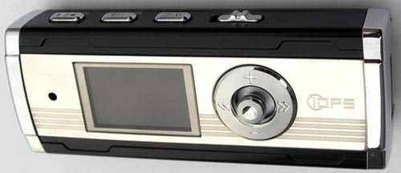

IOPS F5 MP3 Player
a review by
Al Wong
February 4, 2006
Introduction
I had bought the
IOPS F325
about a year and a half ago and was very happy with it.
However, while 256MB of flash memory is adequate, I soon discovered
I needed more memory for my MP3 songs.
When I heard that IOPS had released several new MP3 player models back in November 2005,
including the F5, I was excited to get one. The problem was these new models
were not being currently sold in the USA and IOPS was not saying if or when
they will be selling in the USA.
I ended up buying the F5 from an
on-line store. I can safely say I am the first on my
block to own an F5 and probably the first in my city(!)
Since I previously own the
F325 model,
I will be making comparisons
between the two models (The F5 and the F325) to see just how far IOPS has advanced with the
F5.

The F5 MP3 player
I chose the
IOPS F5 MP3 player
because I wanted something small
and light (it's roughly the size of a pack of chewing gum) with no
moving parts. Since I have used the F325 before, I knew the F5 was
better because it had more memory (I got the 2GB model), a multi-color
OLED display and a USB 2.0 port.
It's not clear how many colors the OLED display is capable of displaying.
The IOPS website claims it has 64K colors while the user manual claims a
more conservative 4K colors.
It also would be nice to have the clock feature.
Also, I pretty much
knew how the controls worked (or so I thought)
since both products are from the same company, IOPS.
The F5 model is also known as the Gyuk model in Korean.
You have to charge the MP3 player first as it comes with
it's own in-built Lithium Polymer battery.
It recharges from the USB port from a computer or from
an AC adaptor that supports a USB connector.
The first recharge took about 1.5 hours as my player
seemed to already have a partial charge out-of-the-box.
Please see the
Usability Issues
Section below..
Using the Features
MP3 Player
Downloading MP3 files into the F5 player was pretty straightforward.
You just turn it ON and plug it in a USB port. In Windows XP,
the player looks like a regular USB drive and you just drag and drop music
files into the MUSIC folder.
The USB 2.0 connection was faster than before. Transferring 256MB of files
to the F5 took about a minute rather than 7 minutes with the F325.
While this is a vast improvement, it wasn't a blazing 40 times faster
as was advertised (which should theoretically take about 10 seconds
to transfer these files).
Perhaps the bottleneck now is how fast the flash
memory on the player can store this information.
(If you are using Windows 98SE, you need to install drivers from
the included CD so your machine can recognize the USB player.
If you are using Windows 98 or below, you are out of luck as the
player won't be recognized.)
The player supports MP3, WMA and OGG audio files.
The included earphones produced music from the player that was
very adequate for me. I was quite satisfied with the sound.
I did notice the F5 earphone wires had a weird, tacky rubbery texture
that didn't exist with the F325 earphones. The F325 earphones
felt better to me.
I should mention in the F5 listing display, only 3 song
titles are listed now rather than 4 song titles (in the F325).
It seems they cut back one line in the display.
This may not sound like much but it means you have to scroll
through more little listing screens to search for the song you want.
What IOPS should do is reduce the font size and have more lines listed.
The F325 had 4 song titles listed in it's listing display.
FM Radio
Reception to major radio stations was crystal clear with the F5.
This was an improvement over the F325 which had a light static
even when tuned to strong radio stations.
Presetting channels was made easier too. You no longer have
to jump to and from different modes to set a channel.
You get up to 24 presets for the radio.
Voice Recorder
This is also very straightforward. You go into Voice mode.
You press the REC button to toggle between recording
and stop recording. The quality of the recording is very clear. The built-in microphone
is very sensitive. The output file is in WMA format.
You may also record from the FM radio or from a wired audio connection but
I will probably never use these functions.
Movie Player
During my pre-buy research, I was wondering if this feature existed at all.
The IOPS website mentions this but the downloaded PDF user manual for the F5 player
did not mention movie playing at all. It was confusing. Also, since this model is
not currently on sale in the USA, I could not get one in my hands to look at it.
I was finally able to confirm this feature via email with an on-line store.
A new feature with the F5 player is being able to play movies
on the player.
All I can say is this feature does exist, it does work and it is kind of cool.
Of course, the screen is really too small to stare at for
real movie length shows and you lose a lot of the detail in the picture.
You have to convert any MPEG-1, WMV, ASF, or AVI movie file you want to see through the included
transcoder software which produces an IMV file.
You transfer this IMV file into the player's MPEG4 folder.
Then you can view the IMV file
from the player.
You cannot run the MPEG
movie files directly from the player.
I believe the transcoder software
has several bugs in it because movie files run through it do not always
play on the player.
Please see the
Usability Issues
Section below.
I have also noticed a synch problem between the video and audio
in some of the resulting IMV files.
Sometimes the audio comes before the video can match it and sometimes after.
This synch problem can be a fraction of a second to a few seconds off.
I think this is a conversion problem with the transcoder software.
Perhaps the conversion algorithm needs improvement.
Movie files are played just like the music files, one right after another.
This could mean you could line up a video programming of sorts.
You can also jump forward to the next movie or backwards to the previous movie.
Image Album
Image Album is a new feature that comes with this player. You can display images files on the OLED display. Presumably, this is for viewing one's photographs once you transfer them to the player.
This feature is barely usable and not well thought out.
It is strange to see a product that plays movies so well yet paradoxically displays images so badly.
Please see the
Usability Issues
Section below.
It looks like this feature was added at the last minute.
The user manual describes how the feature works but it does not tell you
where to put the image files on the player. This should be basic information.
After fiddling with the player, I figured out the image files should be
placed in the MPEG4 folder to view them.
Text Viewer
Text Viewer is a new feature that comes with this player.
You can read plain text files on the OLED display.
The text viewer is very primitive. You only have up and down scrolling.
The screen width appears to be only 13 characters wide and the
display software enforces this by hacking words into pieces to fit the screen.
So the result is kind of awkward to read.
This is not very usable.
Please see the
Usability Issues
Section below.
It looks like this feature was added at the last minute.
The user manual describes how the feature works but it does not tell you
where to put the text files on the player. This should be basic information.
After fiddling with the player, I figured out the text files should also be
placed in the MPEG4 folder to view them.
Usability Issues
There are several usability issues with the F5 player
and half of them deal with the new features that come
with the player. A lot of these issues should never
have been inflicted upon the user in the first place.
IOPS really should do some usability studies before releasing
any new features.
Just give a few average users a chance to use the new player
and see what problems occur in a few days.
The new features were good in concept but the implementations
are primitive and barely usable, if at all.
Here are listed some usability issues in no particular order:
- No idiot light for recharging.
Charging the player is the very first thing you have to do when you
get it out of the box so making sure the player is charging is crucial.
It's not clear if the unit is charging
when plugged into the computer while turned OFF. And there's no way to tell
if the unit has finished charging (if it is charging in the first place).
According to the F5's user manual, you have to turn the unit ON and
then plug it into the computer
to see if it's charging. If the unit is ON, there is a charging "worm"
in the OLED display that tells you how far it's charged.
I discovered later the charging "worm" does not always give an accurate indication
of the charging status either. Sometimes the "worm" indicates the player is
charging when in fact, the player is fully charged.
So what happens if the player is absolutely dead and you can't turn it ON?
Will the player charge while OFF? The user manual is silent about this.
The F325 had a blue LED idiot light for this. The LED lit up when the player
was charging and went OFF when the player was fully charged.
This is actually an important usability feature.
- Keeps rebooting when you disconnect the
player from the computer.
The player powers down and then reboots itself for some reason.
At first I thought this was an error, perhaps due to
static electricity but this rebooting is consistent and
appears to be normal behaviour.
The F325 does not reboot when disconnected from the computer.
Also, the F5 boot time is significantly longer than for the F325.
Why is that?
- Playing Movies is a new feature that comes with this player.
To play movies, you have to run the movie files through the included transcoder
software and convert them to an IMV file. The player will not play MPEG or WMV movies
directly.
You also cannot play QuickTime or Flash files directly either.
The transcoder software will not convert these files to IMV format.
It would have been nice to be able to convert these formats to IMV format.
Another thing I noticed is there is no way to tell how far you
are into the video when watching it. I suggest they take the bottom-most pixel line
and use that as an indicator "worm" so you can tell how far the movie
has run.
- The transcoder software has bugs in it.
Not all MPEG movie files were converted correctly to IMV format all the time! Some files
needed to be run through twice before the transcoder would work correctly.
Very strange behaviour.
This greatly affected the
F5 firmware
discussed later.
I tried to convert a 35 minute ASF file and the transcoder software
just froze without any warning.
I first thought there must be some maximum time limit in the file conversion until
I converted a 36 minute WMV file with no problems. This is a bug.
I have also noticed a synch problem between the video and audio
in some of the resulting IMV files.
Sometimes the audio comes before the video can match it and sometimes after.
This synch problem can be a fraction of a second to a few seconds off.
Also, sometimes, the video gets cut off a few seconds early at the end.
I think this is a conversion problem with the transcoder software.
Perhaps the conversion algorithm needs improvement.
Resulting IMV files sometimes display pixellation in them that was not in the
original MPEG file. Also, the transcoder software sometimes does an illegal
memory reference and then crashes right in the middle of a file conversion.
Did I mention the transcoder software has bugs in it?
- The person who designed the MUSIC Display Screen has no sense
of color and contrast. It looks awful and is hard to read.
Why are they using a Microsoft blue background? Who said that
was the standard color scheme for MP3 players?
How is
bright yellow text on a bright blue background
readable?
How is bright red text on a bright blue background readable?
Why are you using five different fonts in three different sizes?
What happened to the percentage of the song that was played?
That was much more interesting to see than just a loading worm.
This is a perfect example of where less is more.
Let the luminous OLED pixels stand out on their own on a dark background.
You do not have to turn ON every single pixel!
In fact, give the user the option to decide what color scheme he wants
in the display. It would also be nice to let the user decide what
icons he wants in the display too. Having the folder icon is useless.
The musical note icon is useless too.
The two color display on my F325 is very easy to read in comparison.
It seems having less colors to choose from forces you to be inventive.
- The user manual is still that smallish user handbook (3.5" X 4") size
but it's a little better than the F325's user manual (not by much though).
Again, the manual is incomplete and does not explain all the
functions of the player.
The user manual looks like it was written by some high school student
who was just doing the bare minimum to get by. Rather than spend a
few more minutes trying to make the manual more useful to the user,
he would rather go home early and play video games.
Here are some examples:
-
The user manual says you can display a user logo but it does not
say where the logo file should be located, what the filename
should be, what size it should be, what format it should be, etc.
-
The user manual saids you can display images but does not tell you
what folder to put the images in. Similarly with text files, where
do you put them? The pictures in the manual are misleading.
There is no folder called Sample Pictures on the player.
-
What is the significance of the Image Converter and MediaSync software
in relation to the player? It's not clear. There is no explanation.
There are no examples on how to use the software.
- Image Album is a new feature that comes with this player.
You can display images files on the OLED display.
Presumably, this is for viewing one's photographs once you transfer
them to the player.
I was not expecting much from this feature given the small display
but it was much worse than I thought.
Displaying images was a pain in the ass. Loading an image took forever.
God knows why the player is reloading the image since the image file is
already stored in flash memory! Every time you zoom into the picture,
this causes a tedious reload of the image. And you can only zoom in
at a maximum of 5X the initial screen size. So if your image has more resolution
than that, it's lost.
Also, when you want to go back to the Image Album directory after zooming in,
the player annoyingly reloads the current image file one last time. Why???
It is strange to see a product that plays movies so well yet
paradoxically displays images so badly.
7MB movie files load instantaneously
yet it takes several seconds to load a 50KB image file.
It's like night and day.
It would have been better to load the image once (it's still not clear why
the image needs to be "loaded" at all) at full resolution and scroll that
image rather than incrementally zooming in.
- Text Viewer is a new feature that comes with this player.
You can read plain text files on the OLED display.
The text viewer is very primitive. You only have up and down scrolling.
The screen width appears to be only 13 characters wide and the
display software enforces this by hacking words into pieces to fit the screen.
So the result is kind of awkward to read.
This is not very usable.
The text font is pretty big. They should have made the font size at least one half
the size or give that as an option for the user. Then you could fit in more
characters per line and it would still be readable.
It would be nice if the file formatting was preserved and
if you were able to scroll left and right too.
- The date and time clock is a nice thing to have except there is no
way to immediately call it up if you need to see the date and time.
This information is put into a screen saver which means you have
to wait for the screen saver to display to see the date and time. This is not too useful.
It would be more useful to be able to see the date and time immediately
at the press of a button when you need to see it.
Also, the format of the date and time is weird.
No one writes the time as AM 1:15. It's written as 1:15 AM.
Similarly, no one writes the date as 02.03 Thu.
It's written as Thu 02/03/06.
-
This is a nitpicking thing but still slightly annoying.
The labeling text for the top control buttons is upside down!
If you're looking at the OLED display then turn the player
90 degrees towards you to see the buttons on top,
the labeling text is upside down. It should be a little thing
to flip the text and the buttons so you can read them.
It's funny how the buttons are ergonomically placed but
the text is not!
No Tech Support
Tech support is non-existent.
No one at sales@iops.co.kr has responded to any of my emails.
They either do not check their email or cannot read English.
I have also tried contacting:
- mulder@iops.co.kr
- andy@iops.co.kr
- dennisa@iops.co.kr
and get no reply from these email addresses as well.
There are no standard on-line support functions one would expect
for a product like this. There is no
FAQ, no BBS and no firmware downloads.
So there is no on-line tech support.
December 23, 2006 Update -
I finally did get some technical support but I had to call IOPS
directly at their office in Korea (Their phone number is
+8231 777 9222, x6401,
talk to Mr. Andy Kim). I had a few extra dollars in my Skype account
and decided to call IOPS in Korea just to see what would happen.
I recently bought an X5 player at a discount at Ebay but it was not
working properly.
I first thought it was a firmware problem and
wanted to get the latest version from IOPS.
After installing the latest firmware version (received directly from IOPS), my X5 player still
was not working properly so the problem had to be with the player itself.
Mr. Andy Kim at IOPS very graciously had my X5 player repaired and promptly shipped it back to me.
Thank you, Mr. Kim!
So one CAN get support from IOPS but it seems you must call them first
and be persistent. I got great support once I was able to reach Mr. Kim.
Please be patient with them as they are not too fluent in English
and their email server appears not to be too reliable.
By the way, do NOT buy anything from Ebay seller, mstation_mp3,
from Australia. This seller
is a major ripoff artist!
Firmware Bugs
The firmware is the software that is running inside the mp3 player.
I was kind of disappointed to see the websites supporting the F325 go down
without any new firmware updates. It seems my
F325 review
had fallen on deaf ears.
Why sell a firmware enabled product if you do not intend on releasing any
firmware updates?
I also notice there are no websites with firmware updates for the F5.
Now it could be because the F5 model is still new but, given
the lack of firmware updates for the F325, I do not expect any updates
for the F5 either.
I put this section in to get the attention of the IOPS firmware programmers
and tech support.
This is my attempt to get these bugs corrected and
encourage them to produce firmware updates.
It nothing else, perhaps this will help other F5 owners who encounter
the same problems.
-
Movie Bug
I was playing a video which froze the player right at the
end of the video. None of the regular buttons responded. I push the reset
button at the back of the player and the player turns OFF.
Now, when I try to turn the player back ON, it goes into this infinite
loop on bootup! The boot won't finish. It just turns itself OFF and tries
to boot again, turns itself OFF, boot again, turn OFF, etc.
This goes on for a good part of an hour.
I should mention here that while the player is going through this
infinite boot loop, all the regular buttons on the player do not respond
at all. There's no way to shut it down other than a reset.
A really irritating situation.
While I'm playing with it while it's trying to boot up, I suddenly get a prompt
to go into safe mode. As I am looking at it in surprise,
the damn prompt disappears (the wait is only a few seconds)
and it goes into infinite boot mode again.
It turns out if you hold the joystick to the lower right (or upper right)
while it's booting, it will ask you to go into safe mode again.
(You have to contact either the top right or bottom right toggles)
So I select YES for safe mode. While in safe mode you can Initialize
or Format. I choose initialize. It boots up again and now I'm in
MUSIC mode! Cool! I go to the MPEG4 folder and try to play a movie file.
Infinite boot mode again!?
I initialize again, back into music mode, I play another movie file
and this one plays with no problem! AHA!!! This must mean the first
movie file is bad.
This is what I'm guessing the F5 is doing. It played a bad movie file
derived from the transcoder software. The player froze playing the movie.
I reset the player and turned it back ON. The player boots up and attempts
access the last file where it left off. Since the last file was a bad
movie file, the access fails. Then the player reboots itself again,
tries to access the last file it opened, fails, reboots, etc.
The only way out of this infinite loop is to somehow reinitialize the
file pointer to some known location so no error would occur.
Logically, this should have been done with the reset button but it was not!
It turns out the way to do this was hidden in some safe mode and
initialize command.
So the problems reside in both with the buggy transcoder software which
created bad movie files, and the F5 player which doesn't know what to do
when it encounters a bad movie file. It goes into infinite boot mode
after a reset.
I have only converted 8 MPEG files to IMV using the transcoder software.
Of those 8 IMV files, 2 of them were "bad". When I ran the problem 2 MPEG files
through the transcoder again, the resulting IMV files were now playable(?!)
It seems there's a random element in the transcoder conversion algorithm.
Most of the time, the resulting IMV files are playable but sometimes
they are not.
If I had not stumbled upon this safe mode I certainly would have either
exchanged the F5 or returned it for a refund. Note this
safe mode is not documented
in the user manual.
(I've since discovered there's a similar safe mode for the F325 but
it only allows you to format the player.)
-
Music Bug
Songs from one particular CD seem to freeze the player randomly.
The only way to get out of the freeze is by pushing the reset
button on the back of the player.
These same song files (WMA) play without problem in the Windows Media Player.
I'm still looking into this.
Conclusion
Overall, I decided to keep this F5 player.
It certainly has more improved features than the F325 including more memory (2GB),
a multi-color OLED display and a USB 2.0 connection. I like the date and time clock feature
although it would be better if you could push a button to display it when you need to see it.
The movie playing feature works
and is kind of cool although you are limited to playing MPEG files.
And even then, you need to convert them to the IMV format first.
The new features like the Image Album and Text Display are not very usable.
The OLED display color scheme is not very good either and should have been left
as another user option. Who likes Microsoft blue anyway?
Also,
there were a number of usability issues and firmware bugs to overcome,
the user manual is still crap and incomplete,
and the tech support is non-responsive/non-existent.
Considering the past history of IOPS and their MP3 players,
I doubt there will be any firmware updates for the F5.
This means the player will not be improved and you are stuck
with the existing problems as previously described.
Given the above, especially considering the lack of on-line support,
I think this will be the last IOPS MP3 player
I will buy for now.
It was just too much of a struggle
to get around the bugs/problems
this second time around.
December 23, 2006 Update -
I finally did get some technical support. Please read the No Tech Support section above
to learn how I did it.
I received the latest F5 firmware (version 2.00) directly from IOPS
but have not installed it yet.
The reason is, if the firmware fails to work, I have no earlier backup firmware
to fall back upon.
Explanation: Earlier, I had received the latest firmware for the X5 player (another IOPS model)
also directly from IOPS
and this new firmware did not boot after it was installed!? Fortunately, I had working
firmware files from an earlier version and was able to install that to revive
my X5.
Since I have no backup firmware files for the F5, I'm wary about installing the
new 2.00 firmware. Right now, my F5 is running firmware version 1.05 and it's working perfectly.
I wish there was a way to extract the firmware from the player so I would have
a backup.
If anyone has successfully installed the new version 2.00 firmware on their F5 or has
a working earlier version of the firmware files, please
contact me.
Related Links
-
http://www.iops.co.kr/enghome/iops_f5.htm
This is the propaganda page for the IOPS F5.
There is no tech support contact and no firmware downloads.
I get no response from the email address given on the website, sales@iops.co.kr.
The only thing you can do is download the PDF user manual
which I have already stated is incomplete.
|